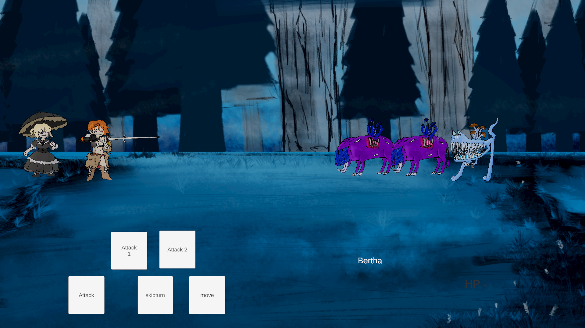

01 / ENGINEERING
Programming & Systems
ออกแบบและพัฒนาระบบเกมด้วยแนวคิดเชิงวัตถุ แยกความรับผิดชอบของระบบ และต่อยอดโครงสร้างให้รองรับรูปแบบการเล่นที่หลากหลาย
ผมคือภูริวัฒน์ นักพัฒนาเกมที่สนใจเบื้องหลังของทุกระบบ ตั้งแต่การออกแบบประสบการณ์ผู้เล่น ไปจนถึงการเขียนโปรแกรมและทำให้แนวคิดกลายเป็นเกมที่เล่นได้จริง
เส้นทางของผมเริ่มจากความสงสัยต่อเกมที่เล่น ก่อนจะกลายเป็นความสนใจในการสร้างระบบและประสบการณ์ของตัวเอง
ระหว่างเล่นเกม ผมมักสงสัยว่าทำไมผู้พัฒนาจึงเลือกออกแบบระบบหรือการตัดสินใจบางอย่าง เมื่อความสงสัยเพิ่มขึ้น ผมจึงเริ่มทดลองสร้างเกมด้วยตัวเอง และค้นพบว่าความสุขของผมอยู่ในกระบวนการคิด ออกแบบ ทำความเข้าใจระบบ และแก้ปัญหาจนผลงานทำงานได้จริง
จากการทำโปรเจกต์และเข้าร่วม Game Jam ผมได้ฝึกทั้งการเขียนโปรแกรม การออกแบบเกม การจัดการงาน และการทำงานร่วมกับผู้อื่น ผมเรียนรู้ว่าซอฟต์แวร์ที่ดีไม่ได้จบแค่การทำให้ระบบทำงาน แต่ต้องเข้าใจผู้ใช้และประสบการณ์ที่ต้องการส่งมอบด้วย
ผมต้องการศึกษาต่อด้านดิจิทัลเกม เพื่อพัฒนาความรู้ด้านการเขียนโปรแกรมและการออกแบบให้ลึกซึ้งขึ้น พร้อมต่อยอดไปสู่การสร้างเกมและซอฟต์แวร์ที่มีคุณค่าและสามารถเติบโตเป็นอาชีพได้
ทักษะที่พัฒนาจากการลงมือสร้างเกมจริง ตั้งแต่การวางแนวคิดจนถึงการประกอบระบบให้ทำงานร่วมกัน
ออกแบบและพัฒนาระบบเกมด้วยแนวคิดเชิงวัตถุ แยกความรับผิดชอบของระบบ และต่อยอดโครงสร้างให้รองรับรูปแบบการเล่นที่หลากหลาย
สร้างระบบควบคุมตัวละคร ฟิสิกส์ การเคลื่อนไหว ragdoll พฤติกรรม NPC และระบบ multiplayer โดยคำนึงถึงความรู้สึกขณะเล่น
ตีโจทย์และเปลี่ยนแนวคิดให้เป็นกลไกการเล่น วางขอบเขตงานให้เหมาะกับเวลา และออกแบบประสบการณ์ที่ผู้เล่นเข้าใจได้
รับบท Game Manager วางแผนงาน ประสานงาน สื่อสารกับทีม และช่วยผลักดันโปรเจกต์ภายใต้ข้อจำกัดของ Game Jam
ใช้เครื่องมือร่วมกันพัฒนาและจัดการเวอร์ชัน รวมถึงทดลองใช้ AI และ MCP เพื่อช่วยลดภาระงานและสนับสนุนกระบวนการพัฒนา
ช่วยผู้เรียนแก้ปัญหาการพัฒนาเกม อธิบายแนวทางแก้ไข และเรียนรู้ที่จะมองระบบจากมุมของทั้งผู้สร้างและผู้ใช้งาน
ผลงานแต่ละชิ้นเริ่มจากโจทย์ที่ต่างกัน ทั้งการทดลองระบบ การทำงานเป็นทีม และประสบการณ์ที่แบ่งปันความรู้ให้ผู้อื่น
แสดงทั้งหมด 12 รายการ
.png) FPS / MOVEMENT01 — GAME
FPS / MOVEMENT01 — GAME
FPS ที่ตีโจทย์ “We R in Trouble Game” ด้วยการเสี่ยงเพื่อแลกชัยชนะและคะแนน พร้อมการเคลื่อนไหวแบบ mantle, strafe และ B-hop
.png) 2D / ONE-BUTTON02 — GAME
2D / ONE-BUTTON02 — GAME
เกม 2D จากโจทย์ “Lost ship (ร้อนชิบ)” ที่ออกแบบให้เล่นด้วยปุ่มเดียว ผู้เล่นเป็นหนูแขนเดียวที่ปกป้องโลกจากปีศาจก๋วยเตี๋ยว และเข้ารอบชิง HamsterHub GameJam X
 CO-OP / ACTION03 — GAME
CO-OP / ACTION03 — GAME
เกม co-op สำหรับผู้เล่น 4 คนที่แบ่งกันควบคุมแขนและขาของหุ่นยนต์ตัวเดียว เพื่อฝ่าอุปสรรคและต่อสู้ นำไปเข้ารอบเสนอโครงการ NSC ครั้งที่ 28
.png) 3D / SONGKRAN04 — GAME
3D / SONGKRAN04 — GAME
เกม 3D มุมมองบุคคลที่สามที่ได้แรงบันดาลใจจากสงกรานต์ ผู้เล่นเป็นสายน้ำเดินทางในเมืองและสาดน้ำสร้างความสุข รับผิดชอบระบบ RagDoll, การควบคุม, การฉีดน้ำ, คะแนน และ NPC
 ROGUELIKE / CARD GAME05 — GAME
ROGUELIKE / CARD GAME05 — GAME
เกมการ์ด roguelike ที่ได้แรงบันดาลใจจาก Regicide ออกแบบให้เล่นวนลูปได้ พัฒนาระบบการ์ดและ core gameplay ก่อนเผยแพร่บน itch.io
.png) PUZZLE / DETECTIVE06 — GAME
PUZZLE / DETECTIVE06 — GAME
เกมนักสืบจากหัวข้อ “Mask” ใน Global Game Jam 72 ชั่วโมง รับผิดชอบระบบเคลื่อนที่ผู้เล่นและร่วมพัฒนากับทีมจนได้อันดับ 15 ของ Game Dev Hub
.png) PHYSICS / PROTOTYPE07 — GAME
PHYSICS / PROTOTYPE07 — GAME
ต้นแบบเกมที่ผู้เล่นเป็นผีสิงไอเทมและกลิ้งไปยังทางออกเพื่อรับเงิน สร้างกับเพื่อนอีก 2 คนภายใน 5 ชั่วโมง โดยรับผิดชอบการออกแบบเกมและระบบฟิสิกส์

TURN-BASED GAME08 — GAMEหนึ่งใน Game Jam แรกที่ทดลองสร้างเกม turn-based ซึ่งท้าทายสำหรับผู้เริ่มต้น เป็นประสบการณ์ฝึก Unity, C# และการทำงานร่วมกับทีม
.png) REUSABLE SYSTEM / ACTIVITY09 — ACTIVITY
REUSABLE SYSTEM / ACTIVITY09 — ACTIVITY
ชุดตัวอย่างสำหรับผู้เรียนใหม่ แยกระบบตำแหน่ง Unit, Status Effect และพื้นฐานให้เลือกใช้หรือประกอบกันได้ พัฒนาด้วย Partial Class และ OOP
ช่วยดูแล Roblox Boot Camp, Sci Game และ AI Kick Starter 1–2 ตอบคำถามและแก้ปัญหาเรื่อง Class ซ้ำ การตั้งค่า Engine และ Input Package
ผ่านการอบรมพื้นฐานภาษา C ที่คณะวิทยาศาสตร์ มหาวิทยาลัยเชียงใหม่ ฝึกกระบวนการคิด การเขียนโปรแกรม และการแก้ปัญหา
อบรมสร้างเกมด้วย Unreal Engine จากโจทย์ 2D side-scrolling แล้วต่อยอดเป็นเกม 2D top-down ที่ได้แรงบันดาลใจจาก Hotline Miami
การพัฒนาตัวเองเกิดขึ้นทั้งจากการแบ่งปันความรู้ การเรียนรู้เครื่องมือใหม่ และการสร้างสิ่งที่คนอื่นนำไปใช้ต่อได้
Template สำหรับเกม turn-based และประสบการณ์ช่วยสอนถูกจัดไว้ในหมวด Activity เพื่อให้ค้นหาได้จากตัวกรองเดียวกับผลงานเกม
ตั้งแต่การอบรมภาษา C และ CAMT Summer Course ไปจนถึงการแก้ปัญหาหน้างาน ผมใช้แต่ละประสบการณ์เป็นจุดเริ่มต้นของการศึกษาต่อด้วยตัวเอง
รายละเอียด บทบาท และเครื่องมือของแต่ละกิจกรรมอยู่ในการ์ด Activity ด้านบน
ข้อมูลการศึกษาตามแฟ้มสะสมผลงานประจำปี 2570
จังหวัดลำปาง · หลักสูตรแกนกลาง (สามัญ)
วิทยาลัยศิลปะ สื่อ และเทคโนโลยี
มหาวิทยาลัยเชียงใหม่
หลักสูตรวิทยาศาสตรบัณฑิต · เทคโนโลยีสารสนเทศ

เป้าหมายต่อไปคือการพัฒนาความรู้ด้านดิจิทัลเกมและวิศวกรรมซอฟต์แวร์ให้ลึกขึ้น เรียนรู้จากผู้คนและเทคโนโลยีใหม่ ๆ แล้วนำทุกอย่างมาต่อยอดเป็นผลงานที่มีคุณค่า
ติดต่อผ่านอีเมล ↗